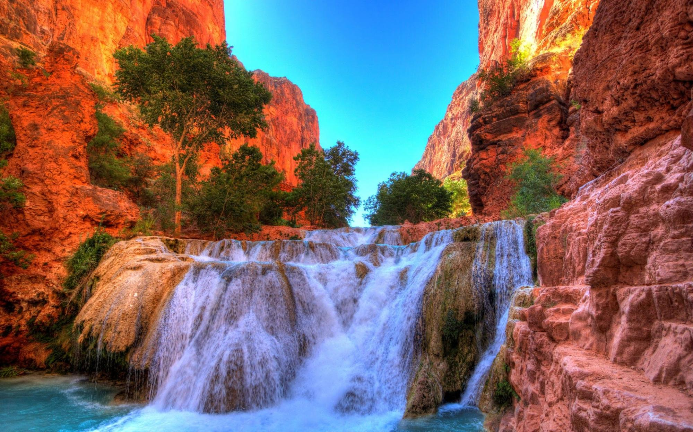

Sofia, Bulgaria


Geographical Location: Europe
Sofia is the capital city of Bulgaria, a country located in Eastern Europe. It is part of the European Union and the primary language spoken is Bulgarian. The city’s population is around 1.3 million. In addition to its urban structures, Sofia also contains a mountain peak called “Vitosha”.
Vitosha is located 30 minutes from the capital’s center, and can be reached by foot, car, and by lift. The peak has an elevation of 7,520 feet and during the summer months the average temperature is around 64 degrees fahrenheit. This makes it a great sight for any type of traveler who seeks the outdoors.
Photo Gallery

Located in the city’s center, St. Alexander Nevsky Cathedral displays some of Sofia’s grand architecture.

Vitosha boulevard is often packed with both locals and tourists and contains shops, restaurants, live music, and great views.

The peak of Vitosha mountain offers a great view of Sofia from above.

A picturesque street giving insight into the locals' lives and the city’s public transport trams.

One of Sofia’s famous roads, this street is paved with an interesting material: yellow cobblestones. Being one of the first streets in the entire city, it was first paved in 1907 and continues to be maintained to this day.
Paris, France


Geographical Location: Europe
Paris is one of the oldest cities in Europe and the city of romance. With a vast amount of cultural history, lined with iconic landmarks, intimate scenes, and world-renowed art museums.
Paris welcomes millions of visitors annually, each drawn to its exquisite charm and beautiful ambiance. Enjoy tasty treats and exquisite cuisine await, while city landmarks illuminate the night sky.
Photo Gallery

Champs Elysées / Arc of Triumph

Eiffel tower

Notre Dame Cathedral

The Louvre Museum

Palace of Versailles
Zermatt, Switzerland


Geographical Location: Europe
Zermatt is a beautiful place, with 365 degree views of the mountains. It’s known for its famous mountain “the Matterhorn,” which is visible from nearly everywhere in the town. The town is vibrant, filled with patrons walking around, shopping for the most high quality snow boots, eating hot Rosti and drinking wine
The skiing in Zermatt is unparalleled. Every day in the winter you can find people skiing all day. When it snows, the mountain becomes even more crowded, with skiers flocking to the mountain from around the country and the world.
Photo Gallery

River flowing through Zermatt

View of the Zermatt town in the summer

The Matterhorn and clocktower at dusk

Zermatt on the ground

Zermatt at night
Grand Canyon


Geographical Location: North America
The Grand Canyon is a natural geological formation located in the state of Arizona. It is a steep-sided canyon carved by the Colorado River over millions of years. The canyon is known for its size, vibrant and varied colors, and intricate rock formations. It is one of the most famous and visited natural landmarks in the United States and around the world.
Though the Grand Canyon is one of the most iconic places to travel, there are many dangers that come from such a terrain. Between 2010 and 2020, 134 have died, mainly due to extreme heat. You can see below, examples of people getting hurt due to the heat and carelessness.
Photo Gallery

Overlook the Grand Canyon snowy cliffs while the sun is setting

Grand Canyon valley river during the day

Cliff overlooking the rest of the Grand Canyon

A mountain goat looking at the camera standing on top of rocks
Grand Canyon valley waterfall with trees